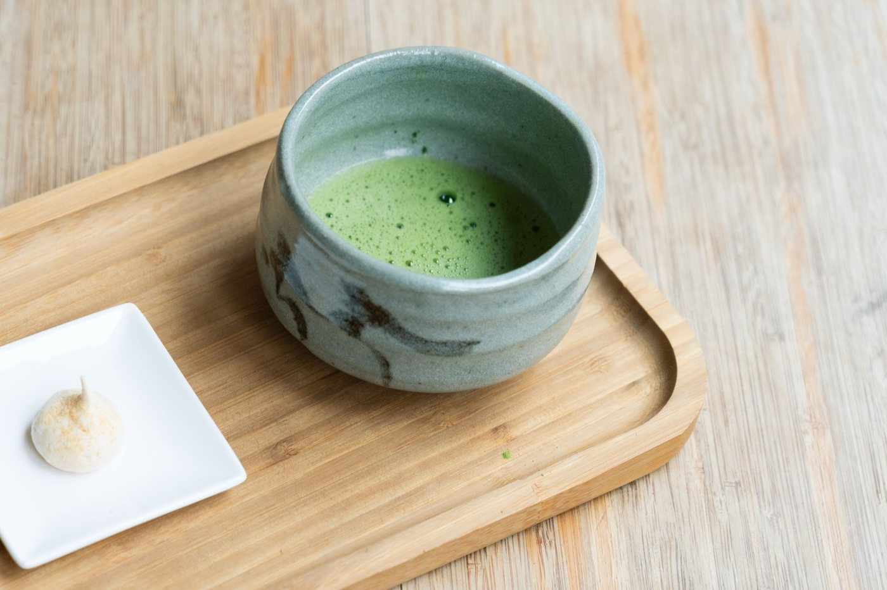
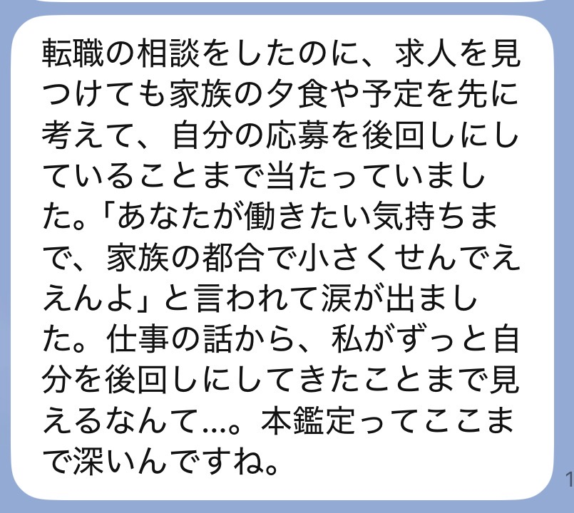

師走 波動を上げる開運鑑定｜まり
みんなの幸せに、
あんたの分も
入れとるかね。
無料鑑定を受け取った方へ
SCROLL
2026年12月の本格特別鑑定
家族を大事にしながら、自分の人生も取り戻すには、どこから整えればいいのか。
師走 波動を上げる開運鑑定 本格特別鑑定
通常価格 19,900円→9,980円（税込）
寒さが深まる師走。
暮らしを整える時間に、
あんた自身の願いも
入れてええんよ。
たとえば、
家族の予定も気持ちも
先に考える。
ひと息つけた夜には疲れきって、
自分が何をしたかったかも
思い出せん。
家族だけでなく、
仕事や恋愛、お金や
自分のこれからも。
ここにある場面は一例じゃけぇね。
今のあんたの願いに合わせて、
全体の流れを読み解くんよ。
家族を大事にしながら、自分の人生も取り戻すには、どこから整えればいいのか。
無料鑑定で
気になった言葉があった人へ。
まだしっくり来とらん人も、
今のご相談を整理するところから
始められるけぇね。
誰かを大切にしてきたことは、
間違いじゃないけぇね。
これからは、自分にも
同じように優しくできる順番を
探していこう。
もし自分の願いを
後回しにしとるなら、
落ち着いた頃には
何がしたかったか分からんことも
あるんよ。
今の願いを、一つだけでも
確かめてみようね。
恋愛・仕事・お金・家族など、
今のご相談から
全体の流れを見つめます。
無料鑑定では、今の流れと
先に整える一歩をお伝えします。
本鑑定は、その悩みが続く背景や、
これから整える順番・選べる道まで
深める鑑定です。
これはお金や人間関係の結果を
約束するものではなく、
今の自分を理解し、
選ぶための鑑定書です。
毎年、年末が近づくとこう思わん？
「今年も、何も変わらんかった」
そして年が明けて、また同じことを考える。
その繰り返しに、心当たりがある人は多いはずよ。
手放せなかった人間関係。
踏み出せなかった仕事。
言えなかった言葉。
それを抱えたまま年を越すと、来年も同じ重さで始まるけぇね。
師走のうちに視ておく意味は、そこなんよ。
年内に整理できるものと、来年へ渡すもの。
その線引きができるのが、この季節だけなんよ。
「またお金使って、何も変わらんかったらどうしよう」
うん、その気持ちは正しいよ。
お金払ってまで視てもらうんは、
ちょっと怖いもんね。

迷うんは、弱いからじゃないんよ。
今の暮らしに必要なことも、
自分の願いも、
大切にしながら選んでええけぇね。
急かさんよ。
ただ、今届いとるサインを、
日常に埋もれさせんといて
ほしいだけなんよ。
今の悩みだけでなく、繰り返す理由と、これからの道まで。
ご相談内容を受け取ってから、
今のあんたに合わせて読み解きます。
鑑定結果は約3〜5日で、
公式LINEへメッセージで
お届けします。
鑑定をご案内したLINEに、
今気になっていることを
そのままお送りください。
9,980円（税込）の本格特別鑑定をお選びください。
決済時のお名前・購入した商品名・
購入完了画面を、
鑑定をご案内したLINEへ
お送りください。
特に知りたいことや、変えていきたいことを確認します。
約3〜5日で、文章の鑑定結果を公式LINEのメッセージでお届けします。
届いたLINEを、そのまま載せとるよ。




掲載の感想は、これまでの本鑑定についていただいたものです。今回の12月企画の結果を示すものではありません。
もう、2026年のままでええん？
2027年こそ人生を変えたい人は、
来んさいね。
あんたの2027年の流れを、
一緒に読み解いていこうね。
私からの夜の案内は、
今夜が最後になるけぇね。
今夜は、
無料鑑定で伝えた言葉を、
もう一度だけ
読み返してみてほしいんよ。
「今の波動の状態」と
「最初の一歩」。
読み返した時に
胸に残る場所があったら、
その奥が、
まだ伝えきれて
おらんところかもしれんよ。
もちろん、
受け取るかどうかは
あなたが
決めて大丈夫。
でも、
少しでも心が
反応しとるなら、
その感覚だけは
無視せんでおいてほしい。
あなたは、
ずっと誰かの気持ちを
大切にしてきた人じゃと思う。
じゃけぇ今夜だけは、
自分の声も
大切にしてあげてね。
私はいつでも、
あなたの味方じゃけぇね🌙
まり